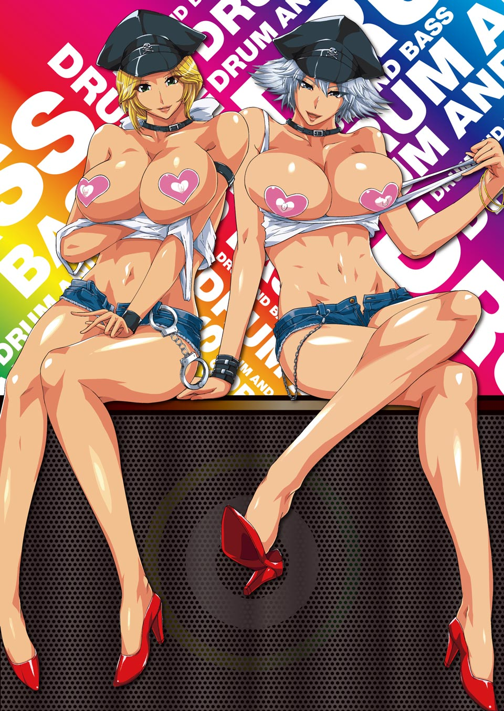
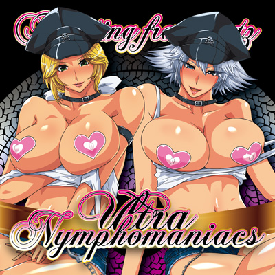
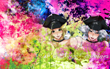
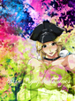
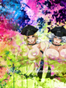
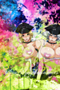

<!doctype html>
<!--[if lt IE 7]><html class="no-js ie6 oldie" lang="ja" xmlns:og="http://ogp.me/ns#" xmlns:fb="http://www.facebook.com/2008/fbml"><![endif]-->
<!--[if IE 7]><html class="no-js ie7 oldie" lang="ja" xmlns:og="http://ogp.me/ns#" xmlns:fb="http://www.facebook.com/2008/fbml"><![endif]-->
<!--[if IE 8]><html class="no-js ie8 oldie" lang="ja" xmlns:og="http://ogp.me/ns#" xmlns:fb="http://www.facebook.com/2008/fbml"><![endif]-->
<!--[if gt IE 8]><!--><html class="no-js" lang="ja" xmlns:og="http://ogp.me/ns#" xmlns:fb="http://www.facebook.com/2008/fbml"><!--<![endif]-->
<head>
	<meta charset="UTF-8">
	<meta http-equiv="X-UA-Compatible" content="IE=edge, chrome=1">
	<title>ULTRANYMPHOMANIACS | Floating Fragmentz</title>
	<meta name="description" content="RANDO: / ULTRANYMPHOMANIACS - FLFR-0004 全6曲収録完全書きおろし新曲のみのミニアルバム！ジャケットイラストには新進気鋭のイラストレーター暮古浪漫氏の描き下ろしイラストがジャケットを飾っています！">
	<meta name="content" content="ULTRANYMPHOMANIACS">
	<meta name="keywords" content="RANDO:, Floating Fragmentz, ULTRANYMPHOMANIACS, C81">
	<meta name="author" content="RANDO:">
	<meta name="viewport" content="width=980">
	<meta property="og:title" content="ULTRANYMPHOMANIACS | Floating Fragmentz" />
	<meta property="og:type" content="website" />
	<meta property="og:url" content="http://www.floatingfragmentz.org/20111231/" />
	<meta property="og:image" content="http://www.floatingfragmentz.org/20111231/share.jpg" />
	<meta property="og:site_name" content="ULTRANYMPHOMANIACS" />
	<meta property="og:locale" content="ja_JP" />
	<meta property="fb:admins" content="100002520505076" />
	<link rel="stylesheet" href="ref/css/style.css" />
	<script src="ref/js/lib/modernizr.js"></script>
	<!--[if lte IE 6]>
	<script src="ref/js/lib/dd_belatedpng.js"></script>
	<script src="ref/js/pngfix.js"></script>
	<![endif]-->
</head>
<body>
	<div id="bg"><div>&nbsp;</div></div>
	<div id="container">
		<div id="header">
			<h1></h1>
			<div></div>
		</div>
		<div id="content">
			<div class="info">
				<div class="figure">
					
				</div>
				<div class="detail">
					<h2>ULTRANYMPHOMANIACS<br />FLFR-0004</h2>
					<dl>
						<dt>スペース</dt>
						<dd>西お-15a Floating Fragmentz</dd>
						<dt>販売日</dt>
						<dd>20111231</dd>
						<dt>価格</dt>
						<dd>500 JPY</dd>
						<dt>頒布予定物</dt>
						<dd>
							<ul>
								<li>ULTRANYMPHOMANIACS / 500円 (新譜)</li>
								<li>OverExtasy / 500円 (旧譜)</li>
								<li>Exige / 500円 (旧譜)</li>
							</ul>
						</dd>
					</dl>
					<p>スリムケース、2P仕様ジャケット、CD-R1枚、全6曲収録<br />完全書きおろし新曲のみのミニアルバム<br />ジャケットイラストには新進気鋭のイラストレーター暮古浪漫氏の描き下ろしイラストがジャケットを飾っています</p>
				</div>
			</div>
			<div class="track">
				<div class="sample">
					<!--注意 コピペで差し替えないで下さい。14391277 を 新しいSoundCloundのIDに変更して下さい。2個あります。-->
					<object height="81" width="100%"><param name="wmode" value="transparent" name="movie" value="http://player.soundcloud.com/player.swf?url=http%3A%2F%2Fapi.soundcloud.com%2Ftracks%2F31798902&amp;show_comments=true&amp;auto_play=false&amp;color=c90a4f"></param><param name="allowscriptaccess" value="always"></param><embed allowscriptaccess="always" wmode="transparent" height="81" src="http://player.soundcloud.com/player.swf?url=http%3A%2F%2Fapi.soundcloud.com%2Ftracks%2F31798902&amp;show_comments=true&amp;auto_play=false&amp;color=c90a4f" type="application/x-shockwave-flash" width="100%"></embed></object>
				</div>
				<table>
					<tr>
						<th>Tr. 01</th>
						<td><h3>Invitation (Garuda in TGS mix)<span>Invitation (Garuda in TGS mix)</span></h3></td>
					</tr>
					<tr>
						<th>Tr. 02</th>
						<td><h3>Bloody tears (legendary Steps)<span>Bloody tears (legendary Steps)</span></h3></td>
					</tr>
					<tr>
						<th>Tr. 03</th>
						<td><h3>BIG BLUE (Sugar drum mix)<span>BIG BLUE (Sugar drum mix)</span></h3></td>
					</tr>
					<tr>
						<th>Tr. 04</th>
						<td><h3>Fields of MADARA (108 raintrees mix)<span>Fields of MADARA (108 raintrees mix)</span></h3></td>
					</tr>
					<tr>
						<th>Tr. 05</th>
						<td><h3>ULTRANYMPHOMANIACS<span>ULTRANYMPHOMANIACS</span></h3></td>
					</tr>
					<tr>
						<th>Tr. 06</th>
						<td><h3>Luckyhole (Stigma complex)<span>Luckyhole (Stigma complex)</span></h3></td>
					</tr>
				</table>
			</div>
			<div class="credit">
				<table>
					<tr>
						<td>Sound &amp; Design</td>
						<th>RANDO:</th>
						<td>Floating Fragmentz</td>
						<td><a href="http://www.floatingfragmentz.org/" target="_blank">http://www.floatingfragmentz.org/</a></td>
					</tr>
					<tr>
						<td>Illustration</td>
						<th>暮古浪漫</th>
						<td>pixiv</td>
						<td><a href="http://www.pixiv.net/member.php?id=899093" target="_blank">ID:899093</a></td>
					</tr>
					<tr>
						<td>DTP Works</td>
						<th>関勝俊</th>
						<td>&nbsp;</td>
						<td>&nbsp;</td>
					</tr>
					<tr>
						<td>Special thanks</td>
						<th>YsK-与作</th>
						<td>Diverse System</td>
						<td><a href="http://diverse.jp/" target="_blank">http://diverse.jp/</a></td>
					</tr>
					<tr>
						<td>Sound &amp; Design</td>
						<th>川瀬蒼司</th>
						<td>LLNE</td>
						<td><a href="http://flavors.me/stillness#480/posterous" target="_blank">http://flavors.me/stillness#480/posterous</a></td>
					</tr>
					<tr>
						<td>Web Design</td>
						<th>Nori</th>
						<td>16104.in</td>
						<td><a href="http://16104.in/" target="_blank">http://16104.in/</a></td>
					</tr>

				</table>
			</div>
			<div class="wallpaper">
				<table>
					<th>
						<td><a href="ref/images/wall/UltraNymphomaniacs_HD.jpg" target="_blank"><br />1920x1080<br />(FUllHD)</a></td>
						<td><a href="ref/images/wall/UltraNymphomaniacs_WXGA.jpg" target="_blank"><br />1280x800<br />(WXGA)</a></td>
						<td class="column"><a href="ref/images/wall/UltraNymphomaniacs_iPad1.jpg" target="_blank"><br />1024x768<br />(iPad)</a></td>
						<td class="column"><a href="ref/images/wall/UltraNymphomaniacs_iPad2.jpg" target="_blank"><br />1024x768<br />(iPad)</a></td>
						<td class="column"><a href="ref/images/wall/UltraNymphomaniacs_iPad3.jpg" target="_blank"><br />1024x768<br />(iPad)</a></td>
						<td class="column"><a href="ref/images/wall/UltraNymphomaniacs_iPhone.jpg" target="_blank"><br />960x640<br />(iPhone)</a></td>
					</th>
				</table>
			</div>
			<div class="banner">
				<table>
					<tr>
						<th><a href="ref/images/banner_468.png" target="_blank"><a/></th>
						<td><a href="ref/images/banner_234.png" target="_blank"><a/></td>
					</tr>
				</table>
				<p>応援バナー</p>
				<p><a href="http://diverse.jp/dvsp-0070/" target="_blank"></a></p>
				<p><a href="http://works2.diverse.jp/" target="_blank"></a></p>
				<p><a href="http://technomy.net/" target="_blank">Technomy//Archives</a></p>
				<p><a href="http://www.planetoid.biz/colorium/" target="_blank"></a></p>
				<p><a href="http://www.fivedotone.com/" target="_blank">FiveDotOne//TWENTYTHREE TO FOUR</a></p>
				<p><a href="http://www.suzumetune.com/omrt.html" target="_blank"></a></p>
				<p><a href="http://xiv.si/re/" target="_blank"></a></p>
				<p><a href="http://www.junkchannel.net/euphorise/" target="_blank"></a></p>
				<p><a href="http://www.junkchannel.net/euphorise/" target="_blank"></a></p>
				<p><a href="http://str3.org/2011_c81/" target="_blank"></a></p>
				<p><a href="http://str3.org/2011_c81/" target="_blank"></a></p>
				<p><a href="http://www.hekatoncheirbeats.jp/20111231_c81.html" target="_blank">HEKATONCHEIR BEATS//東方酒乱集・弐</a></p>
				<p><a href="http://gdbg.nekokan.dyndns.info/2011/" target="_blank"></a></p>
				<p><a href="http://usomitaina-records.org/cd/%E3%83%86%E3%82%AF%E3%81%BD%E3%82%88/" target="_blank">usomitaina records//テクぽよ</a></p>
				<p><a href="http://klamnop.info/" target="_blank"></a></p>
				<p><a href="http://kaede.org/" target="_blank"></a></p>
				<p><a href="http://www.antennapedia.net/lastremote/" target="_blank"></a></p>
				<p><a href="http://anraku.nothing.sh/akisora/2011giniro/" target="_blank"></a></p>
				<p><a href="http://blackberry-rec.blogspot.com/2011/12/amaretto-bbr02.html" target="_blank">Black Berry Recordings//Chimaera EP</a></p>
				<p><a href="http://c-media.org/" target="_blank"></a></p>
				<p><a href="http://www.isw.lunaworks.biz/" target="_blank"></a></p>
				<p><a href="http://sbfr.info/" target="_blank"></a></p>
				<p><a href="http://www.astraia.info/?page_id=487" target="_blank"></a></p>
				<p><a href="http://www.pixiv.net/member_illust.php?mode=medium&illust_id=23905961" target="_blank">九鳥ぱんや//SpecimenS 0.5</a></p>
				<p><a href="http://c-h-s.me/" target="_blank">t+pazolite//tpz GOMENNASAI e.p.</a></p>
				<p><a href="http://buttlabo.net/usb0dot1/" target="_blank">(^3^)&(`u`)//季刊ダイナマイト文壇</a></p>


			</div>
		</div>
	</div>
	<div id="footer">
		<address><h2>Copyright &copy;2011 Floating Fragmentz / <a href="http://www.floatingfragmentz.org/" target="_blank">http://www.floatingfragmentz.org/</a></h2><span><iframe src="//www.facebook.com/plugins/like.php?href=http%3A%2F%2Fwww.floatingfragmentz.org%2F20111231%2F&amp;send=false&amp;layout=button_count&amp;width=110&amp;show_faces=false&amp;action=like&amp;colorscheme=light&amp;font&amp;height=21&amp;appId=278252762194305" scrolling="no" frameborder="0" style="border:none; overflow:hidden; width:110px; height:21px;" allowTransparency="true"></iframe></span><span><a href="https://twitter.com/share" class="twitter-share-button" data-url="http://www.floatingfragmentz.org/20111231/" data-text="RANDO: / ULTRANYMPHOMANIACS - FLFR-0004">Tweet</a>
<script>!function(d,s,id){var js,fjs=d.getElementsByTagName(s)[0];if(!d.getElementById(id)){js=d.createElement(s);js.id=id;js.src="//platform.twitter.com/widgets.js";fjs.parentNode.insertBefore(js,fjs);}}(document,"script","twitter-wjs");</script></span></address>
	</div>
</body>
</html>